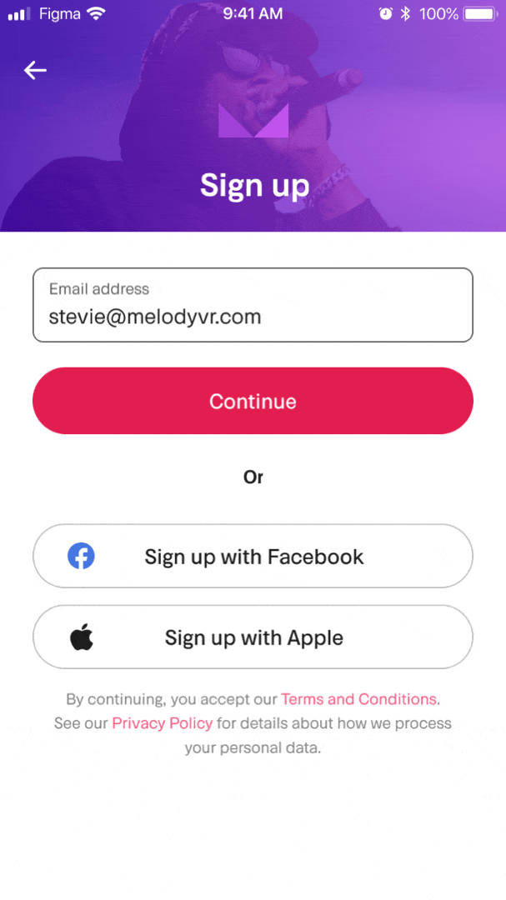

Melody VR
Melody VR was a startup that evolved from a VR app to watch live gigs, into a mobile app that included 360° videos of live shows and access to live streams of festivals and gigs. The business acquired Napster in 2020 with the view to merge its live content into an established streaming app.
CONTEXT
I joined the Melody VR team in September 2020, a few months before they acquired Napster (this was not known to me at the time). I was tasked with improving the onboarding experience for new users — the 360° videos had no explainers around the controls and the data showed that new sign ups weren't going on to watch any content. The app had plenty of free shows, but these were buried within the app. Our goals were to increase the sign up completion rate and funnel new users into a free show to help explain and show off the technology.
EXISTING ONBOARDING TEARDOWN
We broke down the existing onboarding journey alongside some competitor research. There were some obvious improvements where we could streamline and simplify the UX: adding a clearer call to action on the landing screen, simplifying the T&Cs and separating these out from the comms opt-in. We also exposed the email input field directly without needing to tap on a button to access it. We looked to strengthen the proposition around what Melody VR actually was and most crucially, get users straight into a show to experience the USP, with some coaching along the way.
FLOWS & WIREFRAMES
From here we created some high level flows to map out the different journeys and identify all the edge cases. We went through these with the engineering team who gave us plenty of technical and UX feedback around what was possible within the constraints of the existing codebase.
Once the core flows were agreed on, we created some wireframes to start looking at the structure and hierarchy of the UI in more detail. This stage threw up a lot of questions around the smaller details, such as the position of the T&Cs and password validation options.
With the main structure of the screens agreed, I spent a chunk of time exploring UI options. There was no established design system for the product, so part of this was introducing some consistency and documentation for common patterns. I also explored some transitions between screens using Principle to prototype animations.

Transition explorations
USER TESTING
Once we were happy with the general direction of the UI we tested two variations of the flow where we varied the order in which the user inputs the data. The first version used progressive disclosure to input the data step by step, the second version asked the user to input age, gender and password on the same screen. We also got feedback on the usability of the flow in general, especially the onboarding into a show.
We tested with 5 people across various demographics. Our hypothesis was even though the second route introduces an extra screen, it allows the user to skip the age and gender if they don’t want to enter that info. Asking for data step by step is less intimidating for the user and we wanted to make sure the completion rate of the sign up was as high as possible. This proved to be case from the testing — 4 out of 5 users preferred having these inputs presented as different steps.
FINAL UI AND BUILD
We then created the final UI in close collaboration with engineering to make sure all the behaviours and edge cases were covered. We worked closely with the QA team to test builds before releasing. The final part of the puzzle was to set up our monitoring events and agree on the success metrics with the product team.